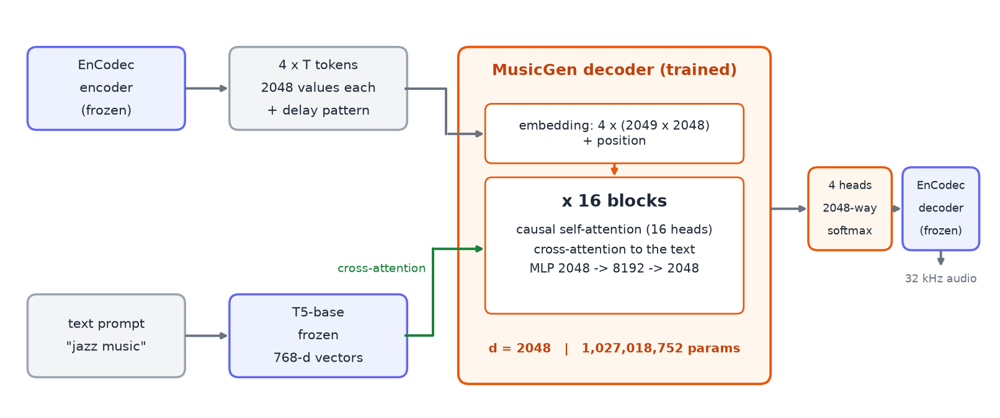
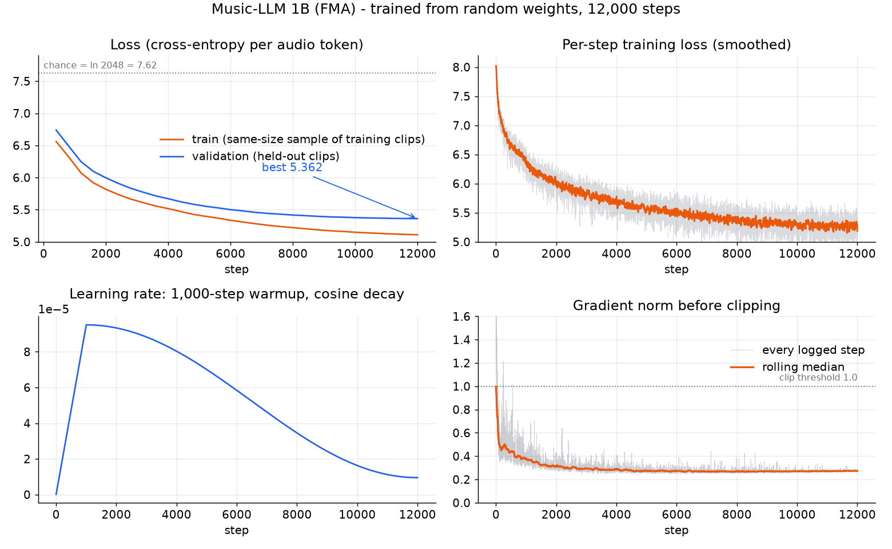

Part 2 of 2 The Music-LLM series ← Part 1: Building a Small Transformer That Makes Music
I took a small text-to-music transformer, made it 23 times bigger, trained it on two GPUs, and then measured, as carefully as I could, what actually changed. The honest answer is “less than I hoped, and for a clear reason.”
1. The model, in one picture
The system has three stages. A frozen T5 encoder turns a prompt such as
"jazz music" into vectors. A frozen EnCodec codec turns audio into a grid of
integer tokens: 4 codebooks, 2,048 possible values each, 50 frames per second. The part I train is the
middle: a transformer decoder that predicts the next audio tokens, looking at the music so far
(self-attention) and at the prompt (cross-attention in every block). EnCodec then turns the predicted
tokens back into a waveform.

This is the same recipe as my earlier 45-million-parameter model. Only three numbers change.
2. Making it 23× bigger
The size comes from three settings: the width d, the number of blocks L, and the number of heads. Everything else, the data format, the loss and the code, is identical.
| 45M | 1B | |
|---|---|---|
| width d | 512 | 2,048 |
| blocks L | 8 | 16 |
| attention heads | 8 | 16 |
| parameters | 44,876,800 | 1,027,018,752 |
The parameter count is not an estimate. With K = 4 codebooks, V = 2,048 tokens each, a 1,500-frame context T and a 768-wide T5 output Dt, it is exactly
N = K(V+1)·d + T·d + L·(14d² + 2·D_t·d + 16d) + 2d + d·K·V
= 16,785,408 + 3,072,000 + 16 × 61,898,752 + 4,096 + 16,777,216
= 1,027,018,752Almost all of it (990 M) is inside the 16 blocks, so doubling the width roughly quadruples the cost.
Why a billion parameters does not fit on one training GPU
Training needs far more memory than the weights. With the AdamW optimizer every parameter carries four float32 numbers: the weight, its gradient and two optimizer statistics, 16 bytes in total. For a billion parameters that is about 16 GB before a single activation is stored.
Four things made the run fit and keep both GPUs busy:
- Pipeline parallelism. The 16 blocks are split across the two GPUs. A batch is cut into micro-batches that flow through the stages, the scheme from the GPipe paper, written by hand.
- Gradient accumulation. A micro-batch is a piece of the batch whose gradient is added to the others, so the update is identical to a single big batch. The code starts with one micro-batch for the whole step and doubles the count only until the worst GPU's peak memory is under 85%. If an out-of-memory error still happens mid-run, it backs off the same way instead of crashing.
- Mixed precision. bfloat16 for the matrix multiplications, float32 for the weights, the optimizer and the loss.
- Fused attention. PyTorch's built-in scaled-dot-product attention with the causal mask applied inside the kernel, instead of materialising a 1,500 × 1,500 mask in every layer.
3. Six experiments that all died, and the one wrong number
The first launch tuned six learning rates, and all six died within their first four steps. The cause was the same hardware quirk I wrote about in Part 1: direct GPU-to-GPU copies over PCIe silently corrupt data, and one small cross-GPU operation I had not rerouted through the CPU was still using that path. The loss was a perfectly normal 7.9; a single number was wrong. Every result below was measured after the fix.
4. The training run
The 1B model starts from random weights, so its loss begins at 8.03, just above pure guessing among 2,048 tokens (ln 2048 = 7.62). It trained for 12,000 steps in 10.3 hours. A short learning-rate sweep found that the rate barely matters across a tenfold range, and that the best one is about 5× lower than for the 45 M model: bigger models want smaller steps.

By the end it had started to memorise: the training audio is only about 206 hours, small for a billion parameters, so the model ran out of new things to learn before it ran out of capacity.
5. Listen
One draw per prompt, 30 seconds each, no re-rolls and no cherry-picking. A lower loss does not by itself mean better-sounding music, so I make no quality claim: judge by ear. Expect genre-flavoured texture, not songs.
Compressed to mp3 for this page; the original 32 kHz wav files are in the model repository.
6. What the extra parameters bought
The logged validation losses of the two models (5.362 for the 1B and 5.410 for the 45M) were measured on different held-out clips, so they cannot be compared directly. To compare fairly I scored both checkpoints on the same 120 clips that neither model trained on. There the 1B reaches a cross-entropy of 5.320 against 5.355 for the 45M: 23× the parameters bought 0.035 nats. A real gain, but a small one.
Caveat. This scores real music, not how generated audio sounds. A lower loss does not by itself mean better-sounding music, so judge the samples above by ear.
7. What it means, and what comes next
- Parameters alone are not enough. With so little distinct data per parameter, the model has run out of things to learn well before it runs out of capacity.
- More steps would mostly memorise. The curve is flat and the gap between training and held-out loss is growing.
- The next lever is data: a larger music corpus, or more varied captions than 15 two-word genre prompts, before another jump in size.
Reproduce and links
- Model, weights (4.3 GB), samples and a single-file inference script: huggingface.co/khashayargh/music-llm-1b-fma
- The 45 M predecessor: huggingface.co/khashayargh/music-llm-45m-fma
- The first post in this series, covering the architecture, the pipeline and the PCIe bug hunt: Building a Small Transformer That Makes Music
pip install torch numpy transformers sentencepiece soundfile huggingface_hub
hf download khashayargh/music-llm-1b-fma --local-dir music-llm-1b-fma
cd music-llm-1b-fma && python example.py "jazz music" --seconds 15References. FMA: Defferrard et al., ISMIR 2017 (arXiv:1612.01840). MusicGen: Copet et al., NeurIPS 2023 (arXiv:2306.05284). EnCodec: Défossez et al., 2022 (arXiv:2210.13438). T5: Raffel et al., JMLR 2020 (arXiv:1910.10683). GPipe: Huang et al., NeurIPS 2019 (arXiv:1811.06965). The model is for research and education; FMA tracks carry Creative Commons licences, many of them non-commercial.